专题4.3 角
专题4.3 角

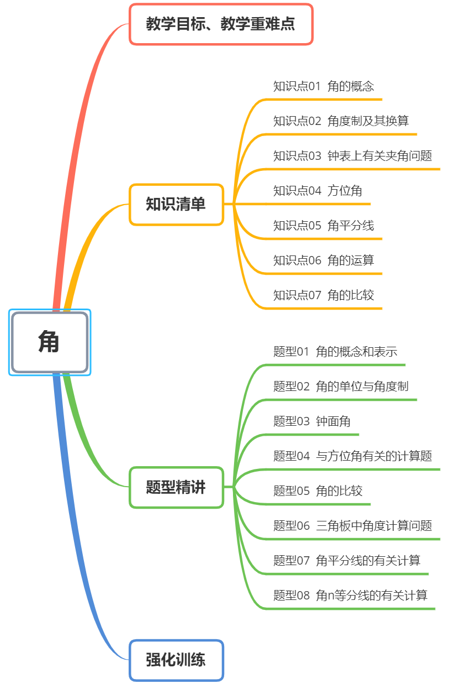

教学目标 | 1. 结合实例理解角的静态与动态定义，掌握用符号、字母表示角的方法，建立几何直观认知。 2. 认识度、分、秒单位，能进行简单换算，学会用量角器准确度量角度，提升动手操作与运算能力。 3. 区分锐角、直角等角的类型，明确其大小关系，能比较角的大小，为后续几何学习奠基。 |
教学重难点 | 1.重点 （1）核心是角的概念理解与表示方法，需能清晰表述角的构成要素，并规范使用符号正确表示不同的角。 （2）关键是角的度量，包括量角器的规范使用和度、分、秒之间的单位换算，确保测量与计算准确。 2.难点 （1）难点在于度、分、秒的换算与角度加减，因涉及六十进制，学生易与十进制混淆，导致计算出错。 （2）难点在于不同情境下角的规范表示，尤其当图形中顶点处有多个角时，学生易混淆表示方式。 |

知识点01 角的概念
1.角的定义：
（1）定义一：有公共端点的两条射线组成的图形叫做角，这个公共端点是角的顶点，这两条射线是角的两条边．如图1所示，角的顶点是点O，边是射线OA、OB．

（2）定义二：一条射线绕着它的端点旋转而形成的图形，射线旋转时经过的平面部分是角的内部．如图2所示，射线OA绕它的端点O旋转到OB的位置时，形成的图形叫做角，起始位置OA是角的始边，终止位置OB是角的终边．
注意：（1）两条射线有公共端点，即角的顶点；角的边是射线；角的大小与角的两边的长短无关．
（2）平角与周角：如图1所示射线OA绕点O旋转，当终止位置OB和起始位置OA成一条直线时，所形成的角叫做平角，如图2所示继续旋转，OB和OA重合时，所形成的角叫做周角．

2.角的表示法：角的几何符号用“∠”表示，角的表示法通常有以下四种：
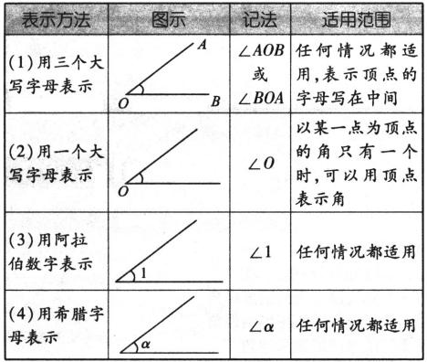
注意：用数字或小写希腊字母表示角时，要在靠近角的顶点处加上弧线，且注上阿拉伯数字或小写希腊字母．
3.角的画法
（1）用三角板可以画出30°、45°、60°、90°等特殊角．
（2）用量角器可以画出任意给定度数的角．
（3）利用尺规作图可以画一个角等于已知角．
【即学即练1】
1．在下列四个图形中，能用 ，
， ，
， 三种方法表示同一个角的图形是（ ）
三种方法表示同一个角的图形是（ ）
A． B． C． D．
C． D．
2．如图，用三个大写字母表示所标记的各角．
（1）可以表示为 ；
（2） 可以表示为 ；
可以表示为 ；
（3） 可以表示为 ．
可以表示为 ．
知识点02 角度制及其换算
角的度量单位是度、分、秒，把一个周角平均分成360等份，每一份就是1°的角，1°的 为1分，记作“1′”，1′的为1秒，记作“1″”．这种以度、分、秒为单位的角的度量制，叫做角度制．
为1分，记作“1′”，1′的为1秒，记作“1″”．这种以度、分、秒为单位的角的度量制，叫做角度制．
1周角＝360°，1平角＝180°，1°＝60′，1′＝60″．
注意：在进行有关度分秒的计算时，要按级进行，即分别按度、分、秒计算，不够减，不够除的要借位，从高一位借的单位要化为低位的单位后再进行运算，在相乘或相加时，当低位得数大于60时要向高一位进位．
【即学即练2】
1．
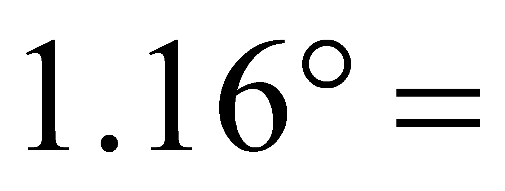
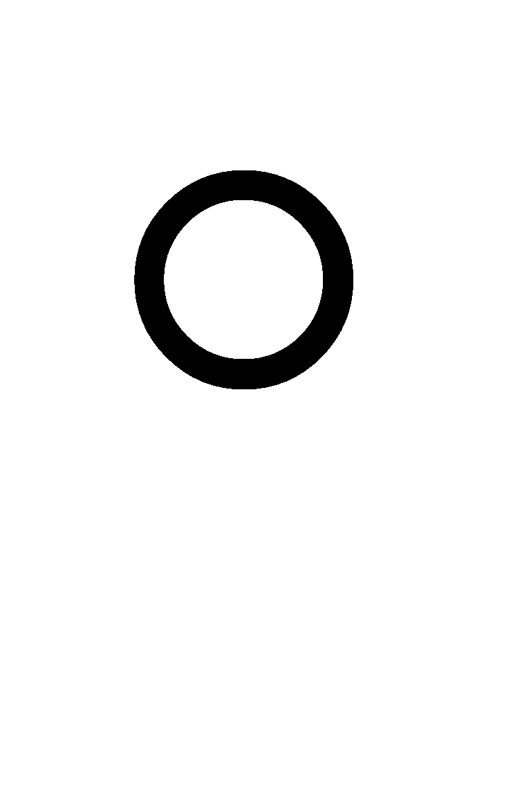
′ ″；
知识点03 钟表上有关夹角问题
钟表中共有12个大格，把周角12等分、每个大格对应30°的角，分针1分钟转6°，时针每小时转30°，时针1分钟转0.5°，利用这些关系，可帮助我们解决钟表中角度的计算问题．
【即学即练3】
1．小明每天下午
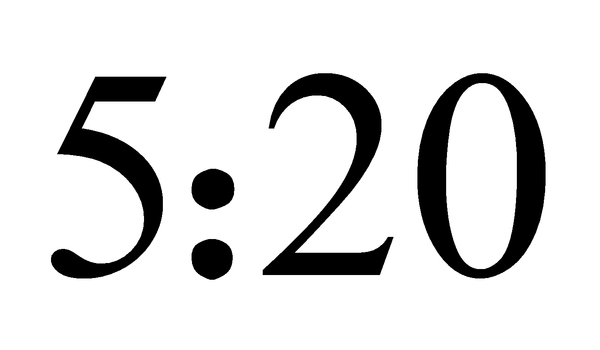
放学，此时钟面上时针和分针的夹角是 ．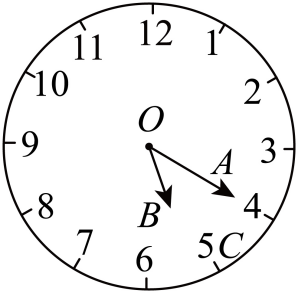
知识点04 方位角
在航行和测绘等工作中，经常要用到表示方向的角．例如，图中射线OA的方向是北偏东60°；射线OB的方向是南偏西30°．这里的“北偏东60°”和“南偏西30°”表示方向的角，就叫做方位角．

注意：（1）正东，正西，正南，正北4个方向不需要用角度来表示．
（2）方位角必须以正北和正南方向作为“基准”，“北偏东60°”一般不说成“东偏北30°” ．
（3）在同一问题中观察点可能不止一个，在不同的观测点都要画出表示方向的“十字线”，确定其观察点的正东、正西、正南、正北的方向．
（4）图中的点O是观测点，所有方向线(射线)都必须以O为端点．
【即学即练4】
1．如图是依依家到学校的行走路线图．
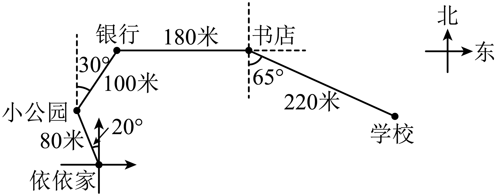
(1)小公园在依依家的 偏 米处．
(2)小公园在银行的 偏 米处．
(3)学校西偏南 ，距离
，距离 处是超市，请用★标出超市的位置．（
处是超市，请用★标出超市的位置．（ 表示
表示 ）
）
知识点05 角平分线
从一个角的顶点出发，把这个角分成相等的两个角的射线，叫做这个角的平分线．如图所示，OC是∠AOB的角平分线，∠AOB＝2∠AOC＝2∠BOC，∠AOC＝∠BOC = ∠AOB．
∠AOB．

注意：由角平分线的概念产生的合情推理其思维框架与线段中点的思维框架一样．
【即学即练5】
1．如图，已知 是内部任意的一条射线，
是内部任意的一条射线， 、
、 分别是
分别是 ，
， 的平分线．
的平分线．
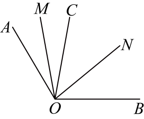
(1)若
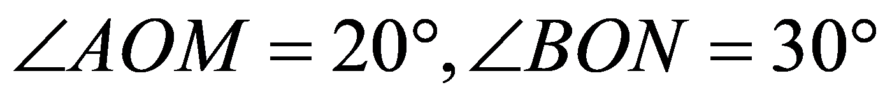
，求 的度数；
的度数；(2)若 ，则
，则 ；若
；若
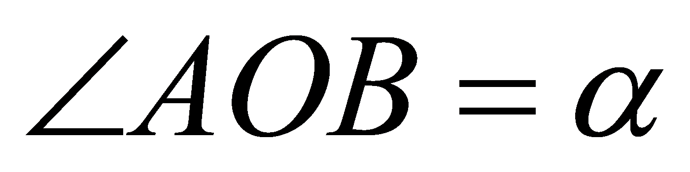
，则 ．知识点06 角的运算
如图所示，∠AOB是∠1与∠2的和，记作：∠AOB＝∠1+∠2；∠1是∠AOB与∠2的差，记作：∠1＝∠AOB-∠2．

注意：(1)用量角器量角和画角的一般步骤：①对中(角的顶点与量角器的中心对齐)；②重合(一边与刻度尺上的零度线重合)；③读数(读出另一边所在线的度数)．
(2) 利用三角板除了可以做出30°、45°、60°、90°外，根据角的和、差关系，还可以画出15°，75°，105°，120°，135°，150°，165°的角．
【即学即练6】
1．如图，已知是内部的一条射线，图中有三个角：，和，当其中一个角是另一个角的两倍时，称射线为的“巧分线”．如果
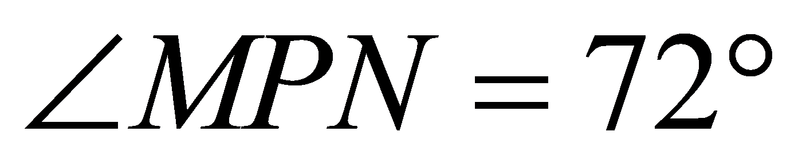
， 是
是 的“巧分线”，则
的“巧分线”，则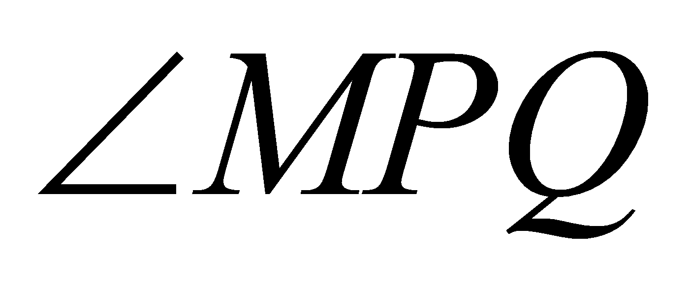
的度数为 ．
知识点07 角的比较
角的大小比较与线段的大小比较相类似，方法有两种：
方法1：度量比较法．先用量角器量出角的度数，然后比较它们的大小．
方法2：叠合比较法．把其中的一个角移到另一个角上作比较．
如比较∠AOB和∠A′O′B′的大小： 如下图，由图（1）可得∠AOB＜∠A′O′B′；由图(2)可得∠AOB＝∠A′O′B′；由图(3)可得∠AOB＞∠A′O′B′．

【即学即练7】
1．已知 ，
， ，
， ，下列说法正确的是（ ）
，下列说法正确的是（ ）
A． B．
B． C．
C． D．
D．

题型01 角的概念和表示
【典例1】（24-25七年级上·全国·课后作业）下列说法正确的是（ ）
A．角是由一条线段绕着它的一个端点旋转而形成的图形
B．角的大小和角的开口大小无关
C．由两条具有公共端点的射线组成的图形叫作角
D．角的两边越长，角就越大
【变式1】（25-26七年级上·全国·课后作业）下列语句中，不正确的个数是（ ）
①由两条射线组成的图形叫做角；②角可以看作由一条射线绕着其端点从一个位置旋转到另一个位置所形成的图形；③大于 的角是钝角；④钝角的一半是锐角．
的角是钝角；④钝角的一半是锐角．
A．1 B．2 C．3 D．4
【变式2】（24-25七年级上·全国·课后作业）图中能用
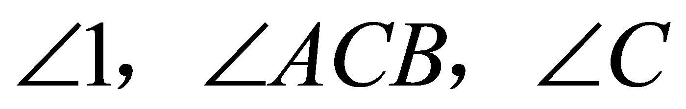
三种方法表示同一个角的是（ ）A． B．C．
B．C． D．
D．
【变式3】（24-25七年级上·甘肃嘉峪关·期末）下列四个图中，能用 ，
， ，
， 三种方法表示同一个角的是（ ）
三种方法表示同一个角的是（ ）
A． B．
B．
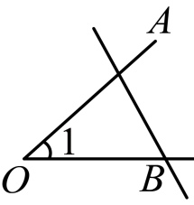
C．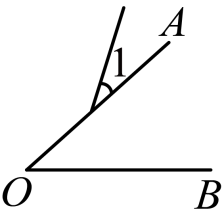
D．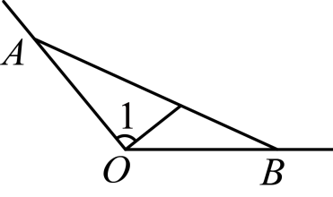
题型02 角的单位与角度制
【典例2】（23-24七年级上·天津·期末）
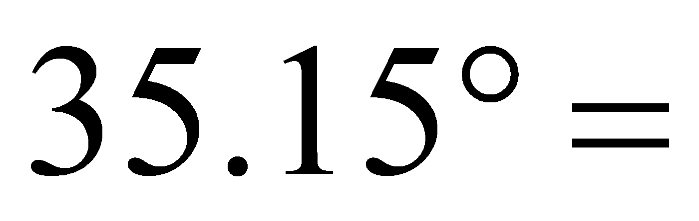


 ；
；

【变式1】（24-25七年级上·全国·课后作业）（1）
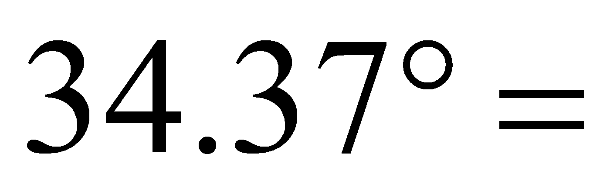

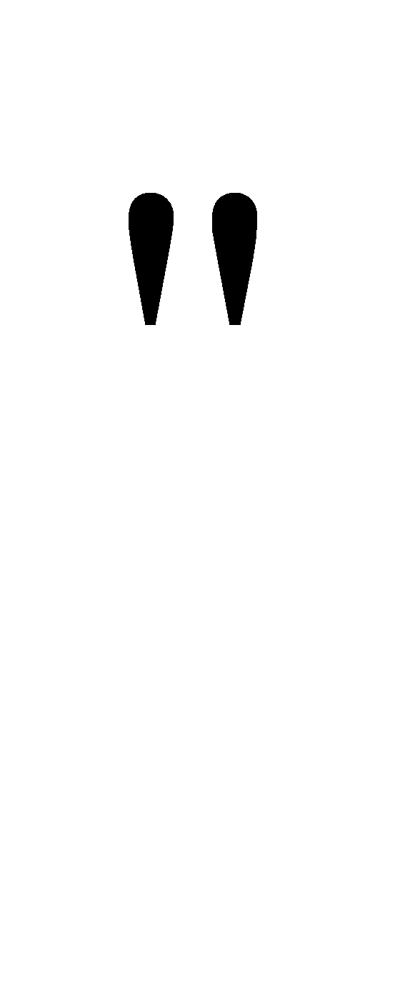
；（2） ．
．
【变式2】（25-26七年级上·全国·课后作业）单位换算：
（1）
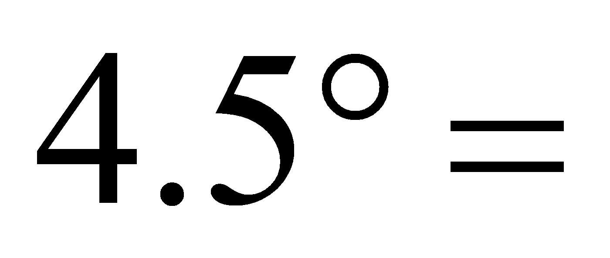
 ；
；（2） ；
；
（3）
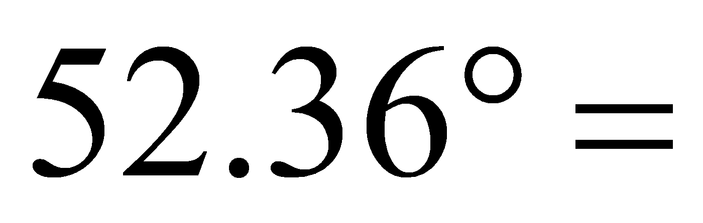

 ；
；（4）
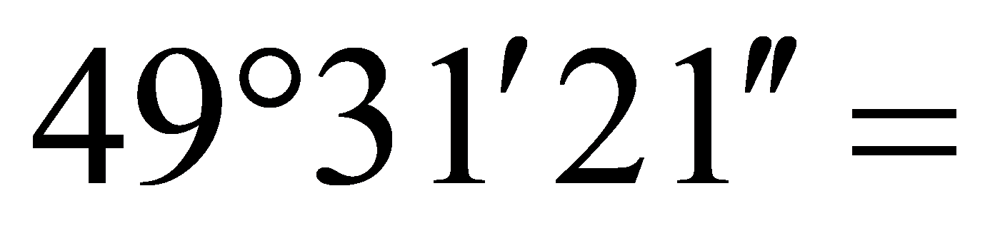
．【变式3】（25-26七年级上·全国·课后作业）计算（用度、分、秒表示）：
（1）
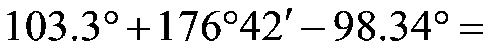
．（2）
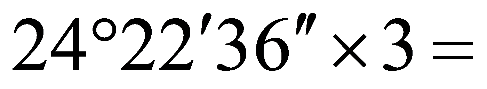
．（3）
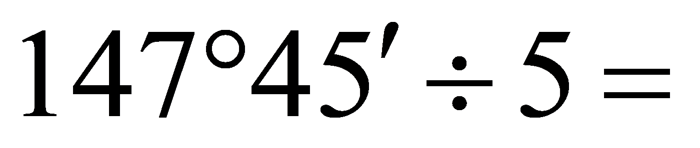
．（4） ．
．
题型03 钟面角
【典例3】（24-25七年级上·甘肃平凉·期末）2时20分时，钟面上时针与分针所成的角是 ．
【变式1】（24-25七年级上·北京西城·开学考试）在9时40分这一刻，时针和分针的夹角为 度．
【变式2】（24-25六年级下·全国·单元测试）如图，在地面上有一个钟，钟面的12个粗线段刻度是整点时针（短针）所指的位置，根据图中时针与分针（长针）所指的位置，该钟面所显示的时刻是 时 分．
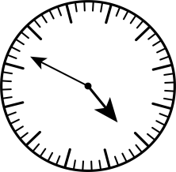
【变式3】（24-25七年级上·陕西咸阳·阶段练习）每天上午 “阳光大课间”都如约而至，此时时针与分针所夹的角为 ．
“阳光大课间”都如约而至，此时时针与分针所夹的角为 ．
题型04 与方位角有关的计算题
【典例4】（24-25七年级上·全国·课后作业）如图， 方向是北偏东 ，
方向是北偏东 ， ．
．

【变式1】（24-25七年级上·贵州黔东南·阶段练习）如图，的方向是北偏东 ，
， 的方向是北偏西
的方向是北偏西 ．若
．若 ，则
，则 的方向是 ．
的方向是 ．

【变式2】（24-25七年级下·广东广州·期末）如图，早上李老师开车从家出发去学校，以60千米/小时的速度沿南偏东 方向行驶20分钟到达学校．下班后李老师沿同一路线回家，则李老师行驶的方向是 ，路程是 千米．
方向行驶20分钟到达学校．下班后李老师沿同一路线回家，则李老师行驶的方向是 ，路程是 千米．

【变式3】（24-25七年级上·福建福州·期末）如图，某海域有三个小岛 ，在小岛
，在小岛 处观测到小岛
处观测到小岛 在它北偏东
在它北偏东
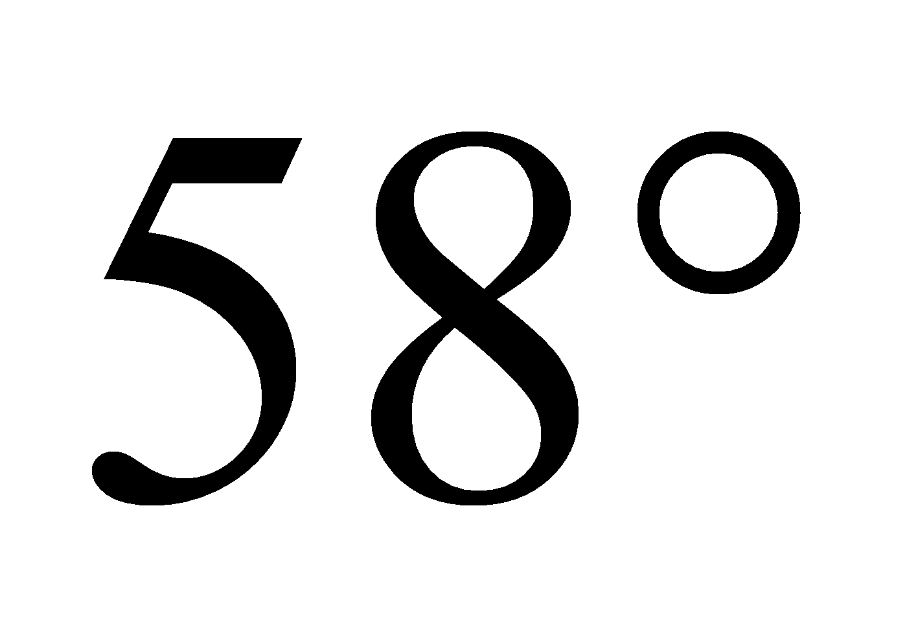
的方向上，观测到小岛B在它南偏东 的方向上，则的度数大小是 ．
的方向上，则的度数大小是 ．
题型05 角的比较
【典例5】（24-25七年级上·安徽宿州·阶段练习）比较大小：
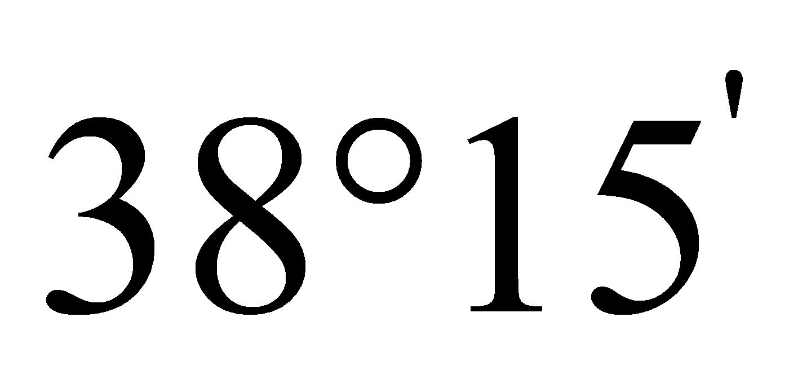
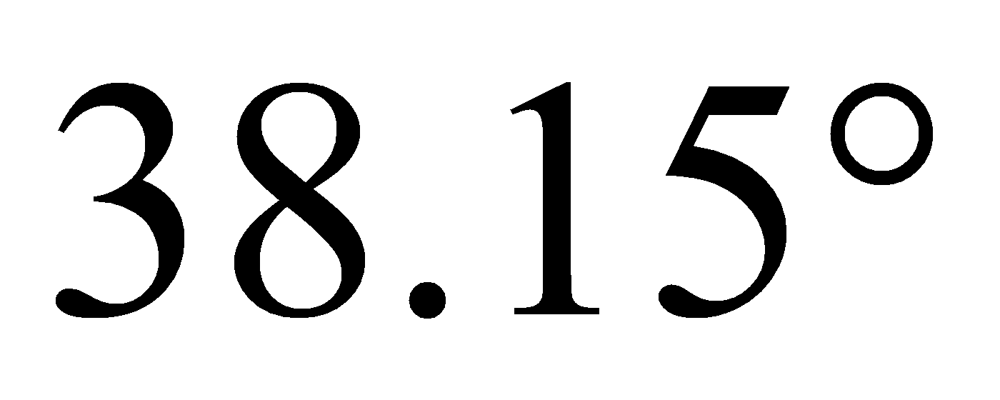
．（填“>”、“<”或“=”）【变式1】（24-25七年级上·浙江台州·期末）若 ，
，
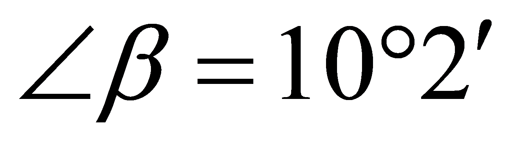
，则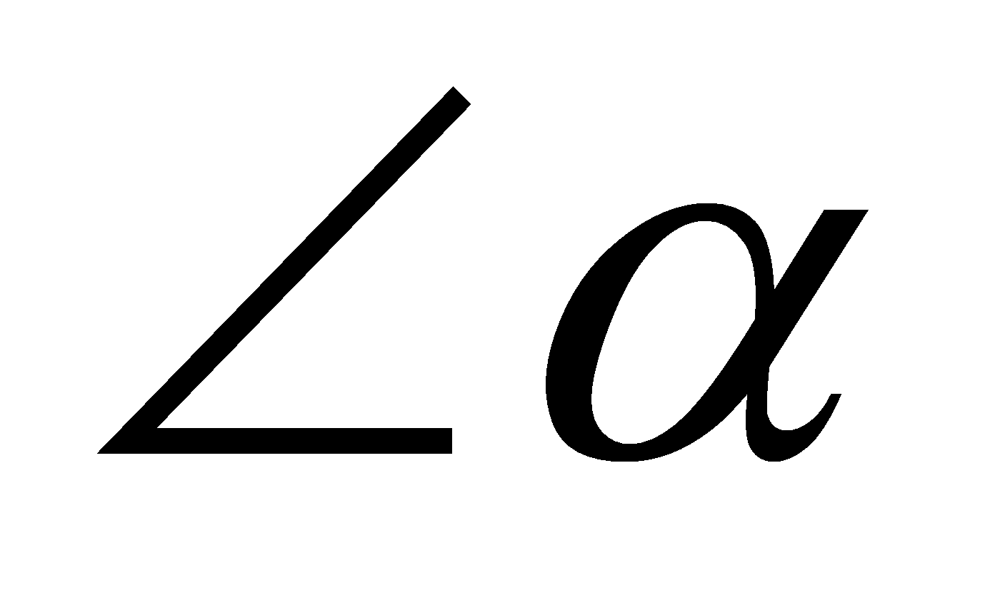
 ．（填“
．（填“ ”“
”“ ”或“
”或“ ”）
”）【变式2】（24-25七年级上·陕西西安·阶段练习）若
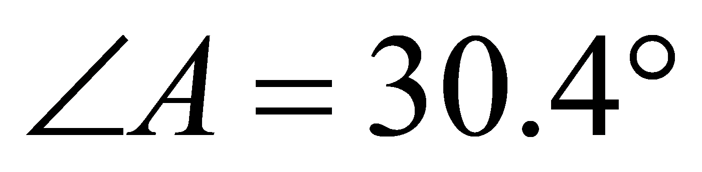
， ，则
，则
 ．（填“>”“<”或“=”）
．（填“>”“<”或“=”）【变式3】（24-25七年级上·江苏宿迁·期末）若
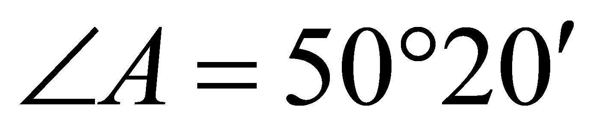
， ，则
，则 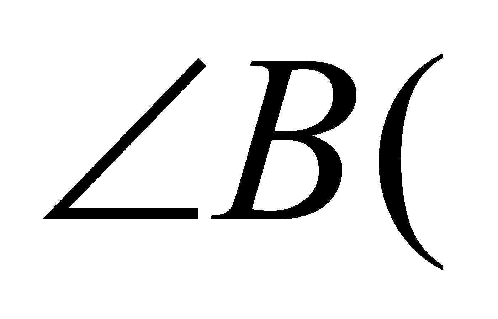
填“”“”或“”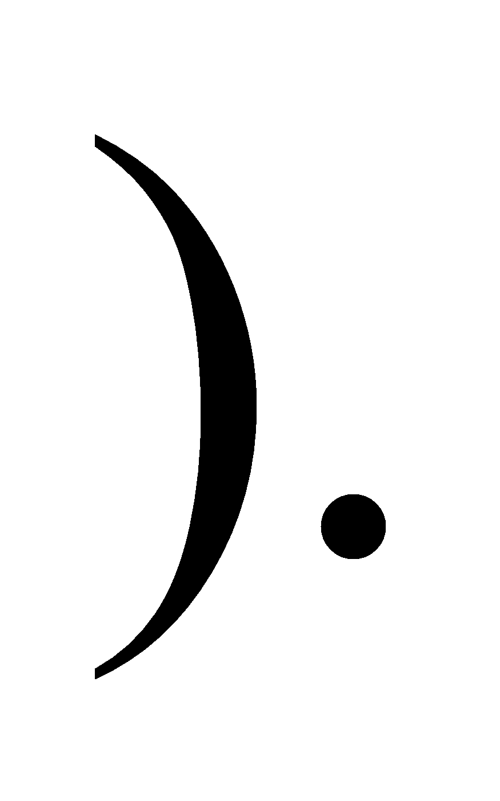
题型06 三角板中角度计算问题
【典例6】（24-25七年级上·福建莆田·期末）如图，将一副三角尺的两个锐角（ 角和
角和 角）的顶点叠放在一起，没有重叠的部分分别记作和
角）的顶点叠放在一起，没有重叠的部分分别记作和 ，若
，若
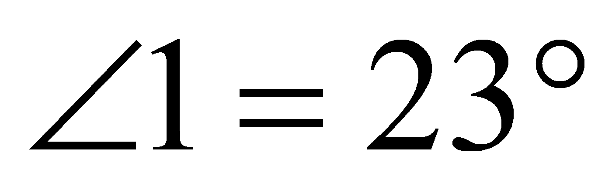
，则的度数为 ．
【变式1】（24-25七年级上·吉林·期末）如图，将一个直角三角板的角的顶点与另一个直角三角板的直角顶点重合若 ，则
，则
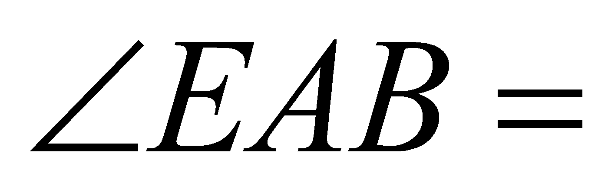
．
【变式2】（24-25七年级上·湖北襄阳·期末）如图，将一个三角板角的顶点与另一个三角板的直角顶点重合，若
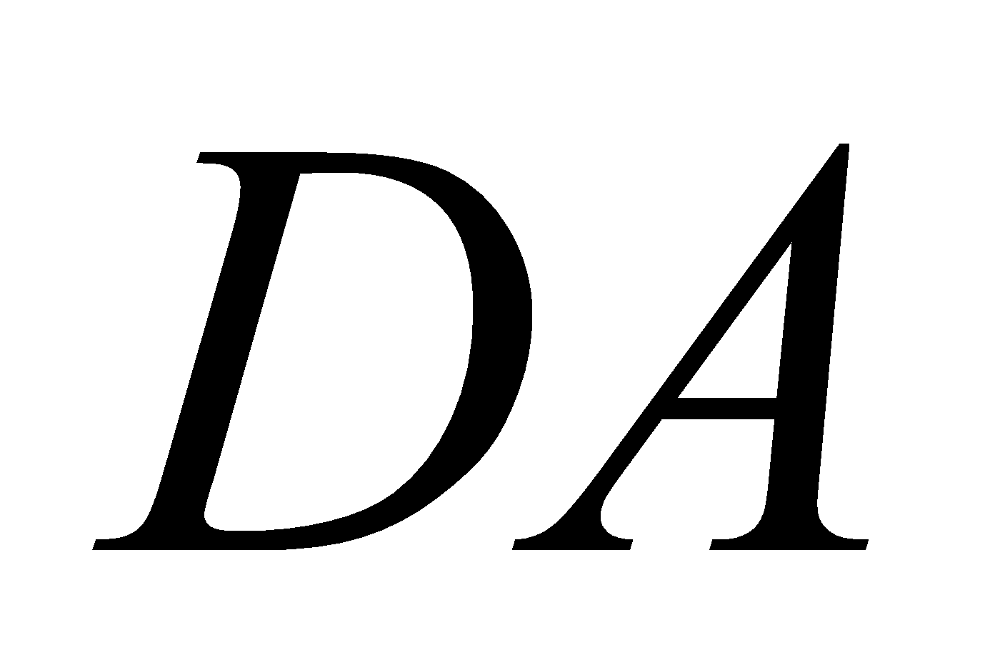
平分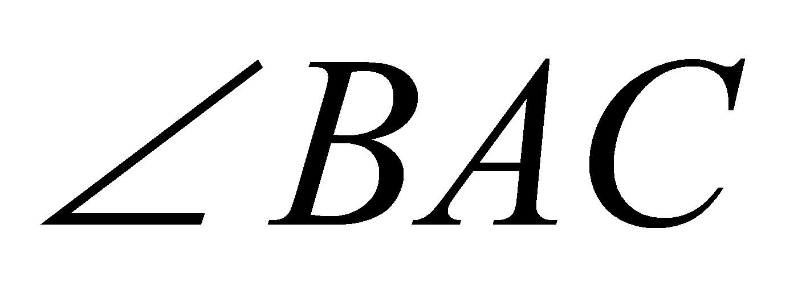
，则 的度数是 ．
的度数是 ．
【变式3】（24-25七年级上·河南郑州·期末）一副三角板按如图方式摆放，点 在同一条直线上，
在同一条直线上， ．现将三角板
．现将三角板 绕点
绕点 逆时针旋转一周，当
逆时针旋转一周，当 所在直线恰好平分
所在直线恰好平分 时，三角板转过的角度为 ．
时，三角板转过的角度为 ．

题型07 角平分线的有关计算
【典例7】（24-25七年级下·山东临沂·阶段练习）如图，点在直线 上，
上， ．
．
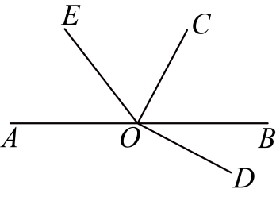
(1)若 平分
平分 ，
， ，则
，则 ________．
________．
(2)若 为锐角，
为锐角， ，请说明平分．
，请说明平分．
【变式1】（24-25七年级上·湖南长沙·期末）如图，是 的平分线，
的平分线， 是
是 的平分线，
的平分线，
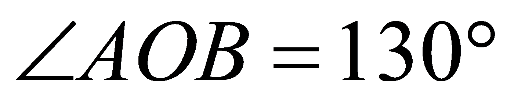
．
(1)求 的度数是多少？
的度数是多少？
(2)如果 ，求
，求 的度数．
的度数．
【变式2】（24-25七年级下·江西赣州·期末）已知是过点的一条射线， 分别平分
分别平分 ．
．
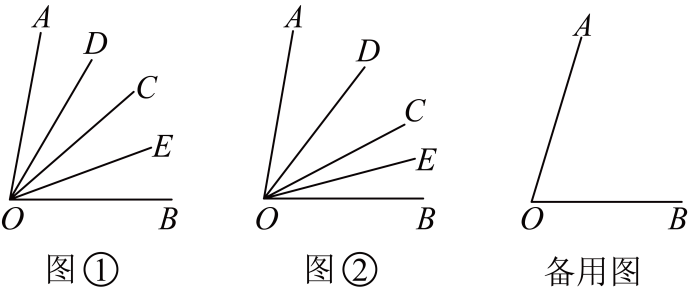
(1)当射线在的内部时
①如图①，若 ，则
，则 _________；
_________；
②如图②，若 ，求
，求 的度数（用含
的度数（用含 的式子表示）；
的式子表示）；
(2)当射线在的外部时，，请借助备用图探究的度数是________（直接写出答案）
【变式3】（23-24七年级上·陕西渭南·期末）【问题背景】已知是 内部的一条射线，且
内部的一条射线，且 ．
．

【问题再现】（1）如图1，若 ，
， 平分
平分 ，
， 平分．求
平分．求 的度数；
的度数；
【问题推广】（2）如图2， ，从点O出发在
，从点O出发在 内引射线OD，满足
内引射线OD，满足 ．若平分
．若平分 ．求
．求 的度数；
的度数；
【拓展提升】（3）如图3，在的内部作射线 ，在的内部作射线
，在的内部作射线 ．若
．若 ；求
；求 和
和 的数量关系．
的数量关系．
题型08 角n等分线的有关计算
【典例8】在
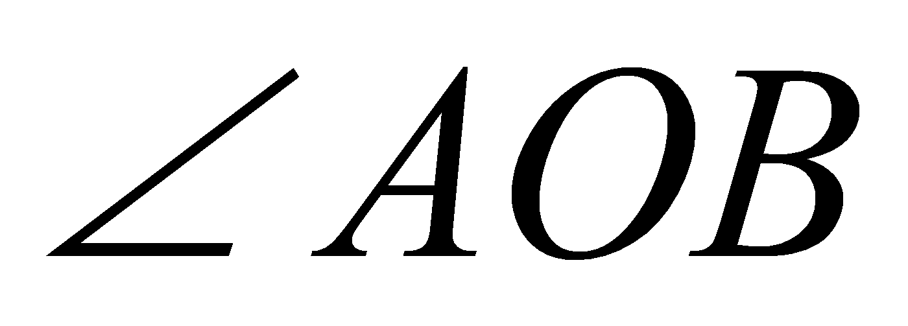
的内部作射线 ，射线把分成两个角，分别为
，射线把分成两个角，分别为 和
和 ，若
，若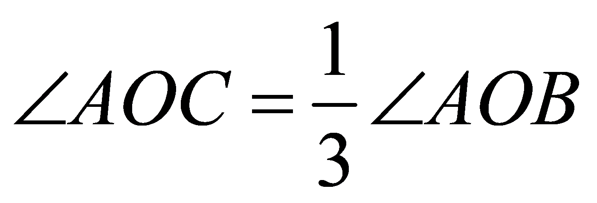
或 ，则称射线为的三等分线．若
，则称射线为的三等分线．若 ，射线为的三等分线，则的度数为（ ）
，射线为的三等分线，则的度数为（ ）A． B．
B． C．或 D．或
C．或 D．或
【变式1】定义：从的顶点出发，在角的内部引一条射线，把分成 的两部分，射线叫做的三等分线．若在
的两部分，射线叫做的三等分线．若在 中，射线
中，射线 是的三等分线，射线是
是的三等分线，射线是 的三等分线，设
的三等分线，设 ，则用含x的代数式表示为 ．
，则用含x的代数式表示为 ．

一、单选题
1．下列四个图形中，能用
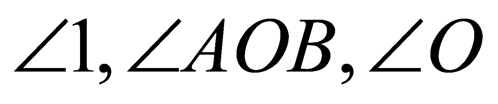
三种方法表示同一个角的是（ ）A． B．
B． C．
C．
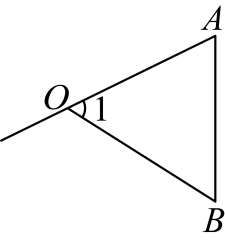
D．
2．下列各式中，正确的是（ ）
A．
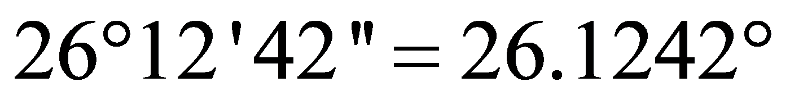
B．
C．
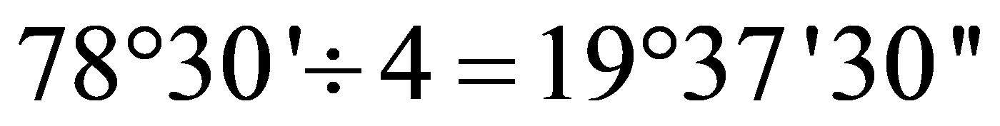
D．
3．一架飞机从某机场向北偏东 方向飞行了
方向飞行了 千米，原路返回时要向（ ）方向飞行千米．
千米，原路返回时要向（ ）方向飞行千米．
A．南偏西 B．西偏南 C．东偏北 D．北偏东
B．西偏南 C．东偏北 D．北偏东
4．如图，直线 相交于点
相交于点 ，射线
，射线 平分
平分
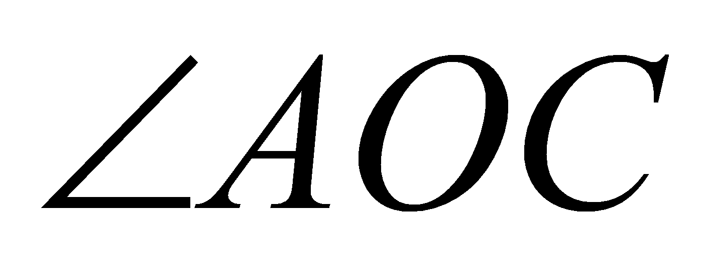
， 是直角．若
是直角．若 ，则
，则 的度数为（ ）
的度数为（ ）A．
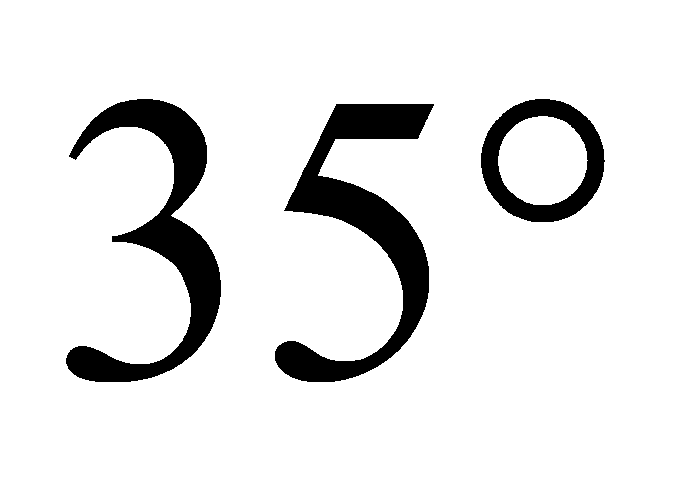
B． C． D．
C． D．
5．如图，两个直角 共顶点，下列结论：①；②
共顶点，下列结论：①；② ；③若
；③若 平分
平分 ，则
，则 平分
平分 ；④
；④ 的平分线与
的平分线与 的平分线是同一条射线．其中不正确的个数有（ ）．
的平分线是同一条射线．其中不正确的个数有（ ）．

A．1 B．2 C．3 D．4
二、填空题
6．比较大小： ，则
，则
 ．（填“
．（填“ ”“
”“ ”或“
”或“ ”）
”）
7．如图，在灯塔处观测到轮船A位于北偏西52°的方向，同时轮船 在南偏东22°的方向，则的度数为 °．
在南偏东22°的方向，则的度数为 °．

8．时间为6：50时，时钟上时针和分针所形成的锐角为 度．
9．如图，一副直角三角板的顶点重合在一起，若，则 的度数为 ．
的度数为 ．

10．如图，点O为量角器中心，射线与射线 经过的刻度分别为
经过的刻度分别为 和
和 ，从点O引一条射线
，从点O引一条射线 ，使，则
，使，则 的度数为 ．
的度数为 ．

三、解答题
11．计算：
(1)．
(2) ．
．
(3)．
(4) ．
．
12．如图所示，O点是学校所在的位置，A小区位于学校南偏东 ，B小区位于学校西北方向，在A小区和B小区之间有一条公路（射线）平分．
，B小区位于学校西北方向，在A小区和B小区之间有一条公路（射线）平分．

(1) 度；
度； 度；
度；
(2) 度；
度；
(3)公路上的车站D相对于学校O的方位是 ．
13．如图，将一副直角三角板的直角顶点 叠放在一起．
叠放在一起．

(1)若 ，则
，则 ；
；
(2)若 ，则 ；
，则 ；
(3)若 ，求的度数．
，求的度数．
14．已知，在内部作射线OC，OD平分 ，．
，．

(1)如图1，求的度数；
(2)如图2，在内部作射线OM，使 ，在外部作射线OE，使得，作OF平分
，在外部作射线OE，使得，作OF平分 ，当时，求
，当时，求 、
、 的度数．
的度数．
15．如图，钟表上显示的时间是 时
时 分．
分．

(1)时针与分针的夹角为  ．
．
(2)设时针与分针的交点为，时针为，分针为 ，过点引一条射线，且
，过点引一条射线，且 平分
平分 ，
， 平分．
平分．
①若在内部，且 ，则
，则 ．
．
②若在外部，且，则的度数为多少？
16．如图，点O在直线 上，从O点引一条射线，平分，
上，从O点引一条射线，平分， ．
．

(1)如图1，若， ，求；
，求；
(2)如图2，若为直角，求n的值；
(3)如图3，若 ，设（用含m的代数式表示的度数）．
，设（用含m的代数式表示的度数）．
17．综合探究
如图1，把一副直角三角板的直角边放在直线l上，两个直角三角板分别在直线l的两侧，且 ，
， ，
， ．
．
(1)如图， ；
；
(2)如图 ，把三角板绕点旋转，使
，把三角板绕点旋转，使 刚好落在的平分线上．此时，
刚好落在的平分线上．此时， 是否平分
是否平分 ？请说明理由；
？请说明理由；
(3)如图，把三角板绕点旋转，使得落在内部，
当 时，则 ；
时，则 ；
当 时，则 ；
时，则 ；
设 ，，试猜想
，，试猜想 与
与 的数量关系，并说明理由．
的数量关系，并说明理由．
18．定义：在同一平面内有，，三条射线．若分别与，形成的角的度数成2倍关系，即 或
或 ，则称射线是的“倍距线”．如图①，若
，则称射线是的“倍距线”．如图①，若 ，
， ，满足，则是的一条“倍距线”．
，满足，则是的一条“倍距线”．
(1)若，是的一条“倍距线”，则的度数为______°．（写出一个答案即可）
(2)如图②，点O在直线 上，
上， ，．
，．
①射线从开始，绕点以每秒 的速度沿逆时针方向旋转．设运动时间为
的速度沿逆时针方向旋转．设运动时间为 秒（
秒（ ，当t为何值时，是的“倍距线”？
，当t为何值时，是的“倍距线”？
②如图③，将一直角三角板一个顶点放在点处 ，一边在射线上，另一边在直线的下方．将三角板绕点以每秒的速度沿逆时针方向旋转．设运动时间为秒，若是
，一边在射线上，另一边在直线的下方．将三角板绕点以每秒的速度沿逆时针方向旋转．设运动时间为秒，若是 的“倍距线”，则
的“倍距线”，则 ______．
______．